MANTENIMIENTO Y REPARACIÓN
servicio con vehículo en marcha
PRECAUCIONES DE MANTENIMIENTO
Precaución: El módulo de detección y diagnóstico (SDM) puede mantener suficiente tensión para desplegar los airbags y pretensores durante 1 minuto después de que se haya girado la llave de contacto a la posición OFF y se haya retirado el fusible. Si los airbags y los pretensores no están desconectados, no comience las labores de mantenimiento hasta que haya transcurrido un minuto desde la desconexión de la alimentación de corriente al SDM. Si se desconectan los airbags, se pueden iniciar las labores de mantenimiento inmediatamente sin necesidad de esperar un minuto. Si no se desactiva temporalmente el SIR durante el mantenimiento, se pueden desplegar inesperadamente los airbags, producirse lesiones personales e incluso realizarse reparaciones innecesarias en el SIR.
Desactivar el mecanismo de retención suplementaria (SIR)
- Gire el volante a la posición de marcha en línea recta.
- Gire la llave de contacto a la posición LOCK y retire la llave.
- Retire los fusibles del airbag F5 y F6 del bloque de fusibles del panel de instrumentos y espere durante más de un minuto a que se descargue el condensador del SIR.
Activar las restricciones inflables auxiliares(SIR)
- Inserte los fusibles F5 y F6 del airbag en el bloque de fusibles del panel de instrumentos.
- Gire la llave de contacto a la posición ON y verifique que el indicador del airbag parpadee siete veces y se apague luego. Si no funciona como se describe, efectúe la comprobación del apartado "Comprobación del sistema de diagnóstico del SIR" de esta sección.
Precaución: Cuando gire la llave de contacto, permanezca alejado de los módulos de inflado. De lo contrario, podría sufrir lesiones personales.
Manipulación, instalación y diagnóstico
- No deben someterse los módulos de airbag a temperaturas superiores a los 65 grados Celsius (149 grados Fahrenheit).
- No deben utilizarse módulos de airbag ni SDM si éstos se han caído desde una altura de 0,9 metros (3 pies) o más.
- Cuando se sustituye un SDM, debe estar orientado con la flecha del sensor hacia la parte delantera del vehículo.
- Es muy importante que el SDM se monte plano sobre la superficie de fijación, paralelo al eje longitudinal del vehículo.
- Para evitar la activación de códigos de diagnóstico de averías (DTC), no aplique corriente al SIR a menos que se conecten todos los componentes o lo exija la tabla de diagnóstico.
- La comprobación del sistema de diagnóstico del SIR debe ser el punto de partida de cualquier diagnóstico de dicho sistema. Esta comprobación verificará el funcionamiento correcto del indicador del airbag y le llevará a la tabla de diagnóstico pertinente para diagnosticar las averías del SIR. La inobservancia de estos procedimientos puede prolongar el tiempo de diagnóstico y provocar la incorrecta sustitución de piezas.
reparaciones e inspecciones necesarias después de un accidente
Precaución: Cualquier reparación que se le haga a la estructura del vehículo tiene que dejarlo igual que como en su configuración original de fábrica. El despliegue del airbag exige la sustitución del SDM, los módulos de los infladores y una revisión exhaustiva de la columna de la dirección.
- Si se ha dañado algún componente del SIR, éstos deberán ser sustituidos. Si los puntos de fijación de los componentes del SIR están dañados, deben repararse o sustituirse.
- No utilice nunca piezas del SIR de otro vehículo. Esto no se aplica a piezas recuperadas compradas a un distribuidor autorizado.
- No intente reparar el SDM, el muelle en espiral o cualquier módulo del airbag. Estos elementos deben sustituirse si están defectuosos.
- Verifique el número de pieza de los módulos de airbag sustituidos. Algunos módulos de infladores parecen idénticos, pero contienen diferentes componentes internos.
accidente con sustitución de componentes de despliegue
Sea cual sea el tipo de impacto, el SDM, todos los pretensores de los cinturones de seguridad, el cableado SIR y el muelle en espiral deberán ser sustituidos En un impacto frontal, todos los airbags delanteros deberán sustituirse y en un impacto lateral, debería sustituirse el airbag lateral desplegado. Después del despliegue, pueden quedar residuos de polvo en la superficie del airbag. El polvo consiste básicamente en almidón de maíz (usado para lubricar la bolsa cuando se infla) y derivados de la reacción química. El hidróxido de sodio reacciona rápidamente con la humedad atmosférica y se convierte en bicarbonato de sodio (también conocido como bicarbonato de sosa). Por consiguiente, no es probable que el hidróxido de sodio esté presente después del despliegue. Sustituya los siguientes componentes del SIR:
Precaución: Utilice guantes y gafas de seguridad durante el procedimiento de desecho. Consulte el apartado "Procedimiento para desechar el módulo del airbag desplegado" de esta sección.
- El SDM
- Los módulos del airbag desplegados y los pretensores.
- Cableado del SIR
- El muelle en espiral.
Inspección de accidente sin componentes de despliegue
Deben realizarse ciertas comprobaciones después de un choque, se haya desplegado el airbag o no:
- La columna de la dirección debe comprobarse exhaustivamente.
- Compruebe los apoyos de las rodillas y los puntos de montaje y verifique si están deformados, doblados o agrietados o presentan otros daños.
- Revise el panel de instrumentos (P/I) y la placa de refuerzo de la columna de la dirección y verifique si están deformados, doblados, agrietados o presentan otros daños.
- Revise si los anclajes del P/I están deformados, doblados y agrietados o presentan otros daños.
- Revise los cinturones de seguridad y los puntos de fijación. Consulte la Sección 8A, Cinturones de seguridad.
Módulo de diagnóstico y detección (SDM)
Precaución: Durante el procedimiento de servicio, tenga cuidado al manipular el SDM. No golpee ni haga vibrar nunca el SDM. No suministre nunca corriente al sistema de sujeciones suplementarias inflables (SIR) hasta que el SDM no esté rígidamente sujeto al vehículo. Para garantizar un funcionamiento correcto del SIR, deben apretarse cuidadosamente todos los tornillos de fijación del SDM y la flecha de este módulo debe quedar orientada hacia la parte delantera del vehículo. El SDM puede activarse si recibe corriente cuando no está bien fijado al vehículo, lo que puede provocar un despliegue inesperado del airbag y posibles lesiones.
Importante: Si el interior del vehículo se ha visto expuesto a la filtración de mucha agua, como goteras, conducción por aguas profundas, inundación u otras causas, es probable que tenga que sustituir el SDM y su conector. Con la llave de contacto en la posición OFF, revise el área del SDM, incluida la alfombrilla. Si hay señales evidentes de inundación, se debe eliminar el agua, reparar los daños producidos por la misma y sustituir el SDM y su conector. Antes de intentar ninguna reparación, debe desactivarse el SIR. Consulte el apartado "Desactivación del sistema de sujeciones suplementarias inflables (SIR)" de esta sección.
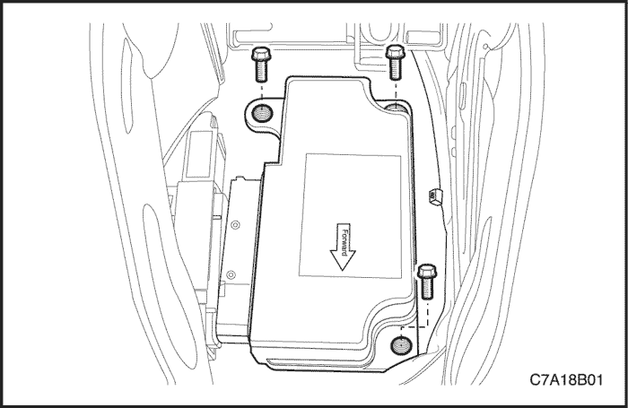


Procedimiento de desmontaje
- Desactive el sistema de sujeciones suplementarias inflables (SIR). Consulte el apartado "Desactivación del sistema de sujeciones suplementarias inflables (SIR)" de esta sección.
- Desmonte la consola delantera del piso. Consulte la Sección 9G, Guarnecido interior.
- Desmonte el bloqueo del seguro de posición del conector, que está sujeto al conector del SDM.
- Desenchufe el conector eléctrico del SDM.
- Quite los tornillos de fijación del SDM.
- Desmonte el SDM.
procedimiento de montaje
- Monte el SDM con la flecha orientada hacia la parte delantera del vehículo.
- Coloque los tornillos de fijación del SDM.
Apretar
Apriete los tornillos de fijación del SDM hasta 10 N•m (7 lb-pie).
- Enchufe el conector eléctrico del SDM.
- Coloque el bloqueo del seguro de posición del conector.
- Monte la cubierta de la consola delantera del piso. Consulte la Sección 9G, Guarnecido interior.
- Active el SIR. Consulte "Activación del sistema de sujeciones suplementarias inflables (SIR)" en esta misma sección.
- Si se sustituye el SDM por otro nuevo, ejecute el procedimiento de reprogramación del BCM para que éste vuelva a memorizar la nueva identificación del SDM.
Precaución: Para garantizar un funcionamiento correcto del SIR, deben apretarse cuidadosamente todos los tornillos de fijación del SDM y la flecha de este módulo debe quedar orientada hacia la parte delantera del vehículo. El SDM puede activarse si recibe corriente cuando no está bien fijado al vehículo, lo que puede provocar un despliegue inesperado del airbag y posibles lesiones.
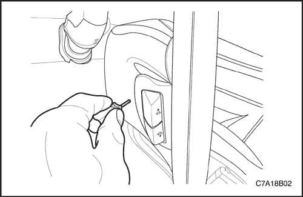
Módulo de airbag del conductor
Procedimiento de desmontaje
- Desconecte el cable negativo de la batería.
Precaución: El módulo de detección y diagnóstico (SDM) puede mantener suficiente tensión para desplegar los airbags y pretensores durante 1 minuto después de que se haya girado la llave de contacto a la posición OFF y se haya retirado el fusible. Si los airbags y los pretensores no están desconectados, no comience las labores de mantenimiento hasta que haya transcurrido un minuto desde la desconexión de la alimentación de corriente al SDM. Si se desconectan los airbags, se pueden iniciar las labores de mantenimiento inmediatamente sin necesidad de esperar un minuto. Si no se desactiva temporalmente el SIR durante el mantenimiento, se pueden desplegar inesperadamente los airbags, producirse lesiones personales e incluso realizarse reparaciones innecesarias en el SIR.
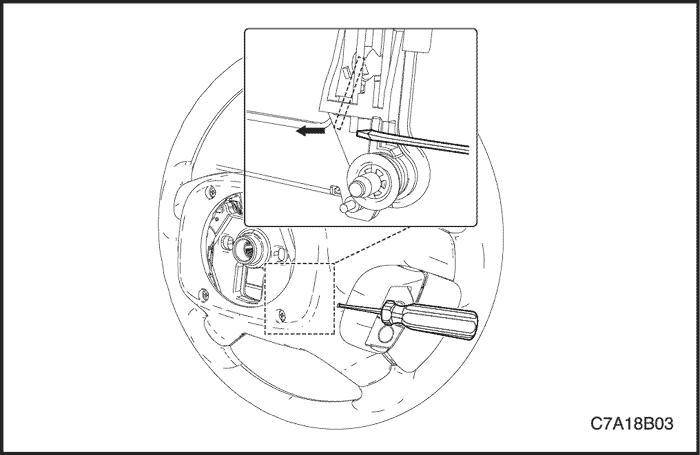
- Ponga el volante en posición de marcha recta.
Precaución: Al manipular un módulo del airbag, mantenga siempre la parte superior de la unidad hacia arriba. Esto deja espacio para que el airbag se expanda si el módulo se despliega inesperadamente. Sin espacio para la expansión, un módulo desplegado inesperadamente hacia una persona u objeto puede causar lesiones o daños al vehículo.
- Introduzca una herramienta de punta plana pequeña en el orificio lateral del volante en dirección horizontal para liberar el módulo de airbag del conductor.
- Presione el pasador del soporte del módulo del airbag para liberar el bloqueo que sujeta al volante el módulo del airbag del conductor.
- Desenchufe el conector del módulo del airbag del conductor.
- Desmonte el módulo del airbag del conductor.
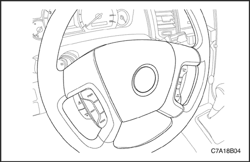
procedimiento de montaje
Precaución: Al manipular un módulo del airbag, mantenga siempre la parte superior de la unidad hacia arriba. Esto deja espacio para que el airbag se expanda si el módulo se despliega inesperadamente. Sin espacio para la expansión, un módulo desplegado inesperadamente hacia una persona u objeto puede causar lesiones o daños al vehículo.
- Enchufe el conector del módulo del airbag del conductor.
- Alinee con el volante los pasadores de sujeción del módulo del airbag del conductor.
- Empuje el módulo del airbag para asegurarlo.
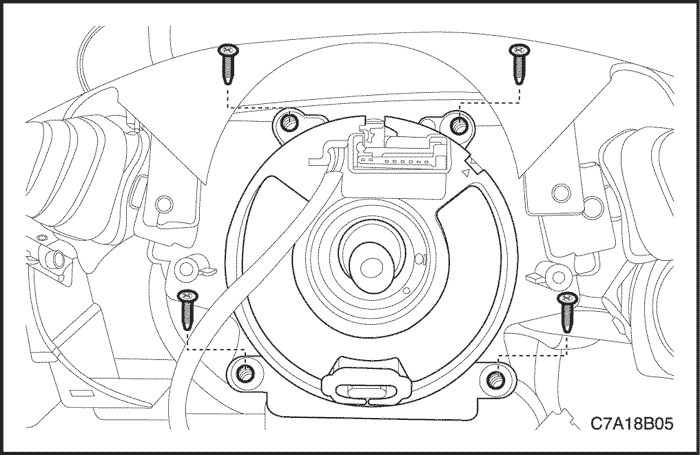
Muelle de reloj
Procedimiento de desmontaje
Precaución: El módulo de detección y diagnóstico (SDM) puede mantener suficiente tensión para desplegar los airbags y pretensores durante 1 minuto después de que se haya girado la llave de contacto a la posición OFF y se haya retirado el fusible. Si los airbags y los pretensores no están desconectados, no comience las labores de mantenimiento hasta que haya transcurrido un minuto desde la desconexión de la alimentación de corriente al SDM. Si se desconectan los airbags, se pueden iniciar las labores de mantenimiento inmediatamente sin necesidad de esperar un minuto. Si no se desactiva temporalmente el SIR durante el mantenimiento, se pueden desplegar inesperadamente los airbags, producirse lesiones personales e incluso realizarse reparaciones innecesarias en el SIR.
- Desconecte el cable negativo de la batería.
- Desmonte el módulo del airbag del conductor. Consulte el apartado "Módulo del airbag del conductor" de esta sección.
- Desmonte el volante. Consulte la Sección 6E, Volante y columna de dirección.
- Desmonte el panel de recubrimiento superior e inferior de la columna de la dirección. Consulte la Sección 6E, Volante y columna de dirección.
- Desmonte el apoyo de la rodilla del conductor. Consulte la Sección 9E, Instrumentación/información para el conductor.
- Desenchufe los conectores que hay cerca de la columna de la dirección.
- Quite los tornillos.
- Desmonte el muelle en espiral del eje de la dirección.
procedimiento de montaje
Precaución: Si el muelle en espiral no está bien alineado, el volante no podrá girar completamente a la hora de efectuar un giro. Este impedimento al girar puede provocar una colisión del vehículo. La alineación incorrecta del muelle en espiral puede dejar sin funcionar el SIR e impedir que los airbags se desplieguen en caso de choque. Estos problemas pueden causar lesiones.
Aviso: Si se dan más de tres vueltas, ya sea en el sentido de las agujas del reloj o en sentido contrario, se puede dañar el muelle en espiral.
- Gire las ruedas delanteras hasta dejarlas en posición de marcha en línea recta.
- Monte el muelle en espiral con sus tornillos.
Apretar
Apriete los tornillos de fijación del muelle en espiral hasta 1,25 N•m (11 lb-pulg.).
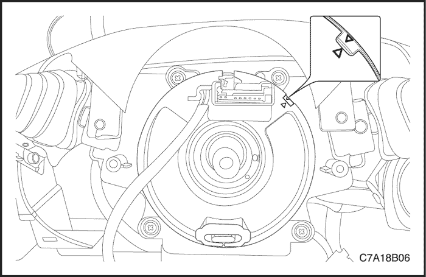
- Gire la patilla del muelle en espiral en el sentido de las agujas del reloj hasta el tope (no lo fuerce).
- A continuación, gire la patilla del muelle en espiral en el sentido contrario a las agujas del reloj 2 vueltas y media aproximadamente hasta la posición de punto muerto, con las ruedas en posición de marcha en línea recta.
- Alinee correctamente las marcas punteadas en los componentes del muelle en espiral.
- Enchufe los conectores que hay cerca de la columna de la dirección.
- Monte el apoyo de la rodilla del conductor. Consulte la Sección 9E, Instrumentación/información para el conductor.
- Monte el panel de recubrimiento superior e inferior de la columna de la dirección. Consulte la Sección 6E, Volante y columna de dirección.
- Monte el volante. Consulte la Sección 6E, Volante y columna de dirección.
- Monte el módulo del airbag del conductor. Consulte el apartado "Módulo del airbag del conductor" de esta sección.
- Conecte el cable negativo de la batería.
Módulo de airbag del pasajero
Procedimiento de desmontaje
Precaución: El módulo de detección y diagnóstico (SDM) puede mantener suficiente tensión para desplegar los airbags y pretensores durante 1 minuto después de que se haya girado la llave de contacto a la posición OFF y se haya retirado el fusible. Si los airbags y los pretensores no están desconectados, no comience las labores de mantenimiento hasta que haya transcurrido un minuto desde la desconexión de la alimentación de corriente al SDM. Si se desconectan los airbags, se pueden iniciar las labores de mantenimiento inmediatamente sin necesidad de esperar un minuto. Si no se desactiva temporalmente el SIR durante el mantenimiento, se pueden desplegar inesperadamente los airbags, producirse lesiones personales e incluso realizarse reparaciones innecesarias en el SIR.
- Desconecte el cable negativo de la batería.
- Desmonte el alojamiento del compartimento del panel de instrumentos. Consulte la Sección 9E, Instrumentación/información para el conductor.
- Desenchufe el conector eléctrico amarillo del airbag del pasajero.
- Quite los tornillos de fijación de la barra de anclaje.
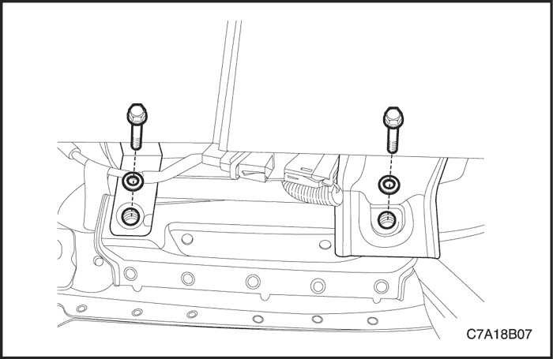
- Desmonte el panel de instrumentos. Consulte la Sección 9E, Instrumentación/información para el conductor.
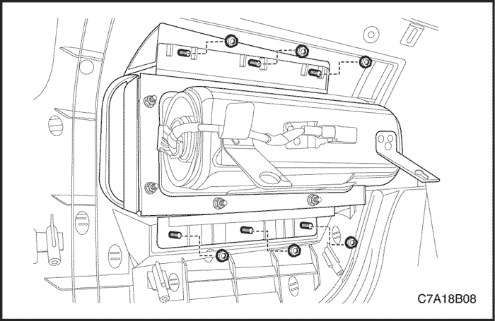
- Desmonte el módulo del airbag del pasajero quitando las tuercas de fijación del panel de instrumentos superior.
- Desmonte el módulo del airbag del pasajero.
procedimiento de montaje
- Monte el módulo del airbag del pasajero.
- Coloque las tuercas de fijación del airbag del pasajero en el panel de instrumentos.
Apretar
Apriete las tuercas de fijación del airbag del pasajero hasta 10 N•m (7 lb-pie).
- Monte el panel de instrumentos. Consulte la Sección 9E, Instrumentación/información para el conductor.
- Coloque los tornillos de fijación del airbag del pasajero a la barra de anclaje.
Apretar
Apriete los tornillos de fijación del airbag del pasajero hasta 10 N•m (7 lb-pie).
- Enchufe el conector eléctrico amarillo del airbag del pasajero.
- Monte el alojamiento del compartimento del panel de instrumentos. Consulte la Sección 9E, Instrumentación/información para el conductor.
- Conecte el cable negativo de la batería.
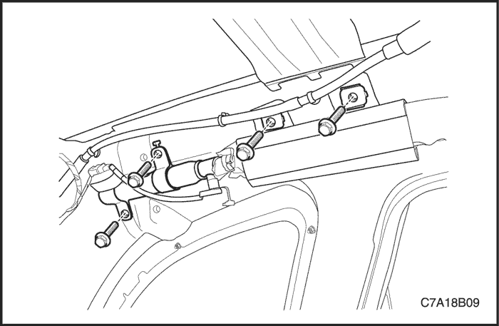
Módulo de airbag del rail del techo
Procedimiento de desmontaje
- Desconecte el cable negativo de la batería.
- Desmonte el forro del techo. Consulte la Sección 9Q, Techo.
- Quite los tornillos que hay cerca del lado del techo de las puertas delantera y trasera.
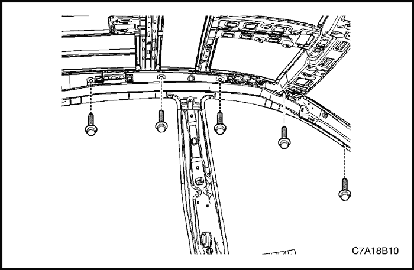
- Desenchufe el conector del módulo del airbag del rail del techo.
- Quite los tornillos que hay cerca de la ventanilla de la parte posterior.
- Desmonte el módulo del airbag del rail del techo.
procedimiento de montaje
- Monte el módulo del airbag del rail del techo.
- Monte el módulo del airbag del rail del techo con sus tornillos.
Apretar
Apriete los tornillos de fijación del airbag del rail del techo hasta 10 N•m (7 lb-pie).
- Enchufe el conector del módulo del airbag del rail del techo.
- Monte el forro del techo. Consulte la Sección 9Q, Techo.
- Conecte el cable negativo de la batería.
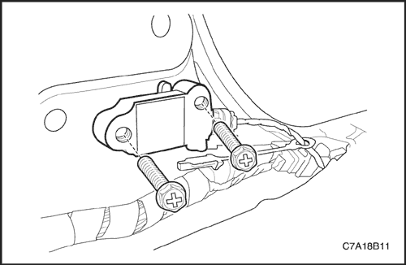
Sensor del airbag lateral
Procedimiento de desmontaje
Precaución: El módulo de detección y diagnóstico (SDM) puede mantener suficiente tensión para desplegar los airbags y pretensores durante 1 minuto después de que se haya girado la llave de contacto a la posición OFF y se haya retirado el fusible. Si los airbags y los pretensores no están desconectados, no comience las labores de mantenimiento hasta que haya transcurrido un minuto desde la desconexión de la alimentación de corriente al SDM. Si se desconectan los airbags, se pueden iniciar las labores de mantenimiento inmediatamente sin necesidad de esperar un minuto. Si no se desactiva temporalmente el SIR durante el mantenimiento, se pueden desplegar inesperadamente los airbags, producirse lesiones personales e incluso realizarse reparaciones innecesarias en el SIR.
- Desconecte el cable negativo de la batería.
- Retire la moldura embellecedora inferior del montante central. Consulte la Sección 9G, Guarnecido interior.
- Desenchufe el conector eléctrico.
- Quite el tornillo de fijación del sensor del airbag lateral.
- Desmonte el sensor del airbag lateral.
procedimiento de montaje
- Monte el sensor del airbag lateral.
- Coloque el tornillo de fijación del sensor del airbag lateral.
Apretar
Apriete el tornillo de fijación del sensor del airbag lateral hasta 10 N•m (7 lb-pie).
- Enchufe el conector eléctrico.
- Coloque la moldura embellecedora inferior del montante central. Consulte la Sección 9G, Guarnecido interior.
- Conecte el cable negativo de la batería.
Hebilla del cinturón de seguridad delantero con pretensor
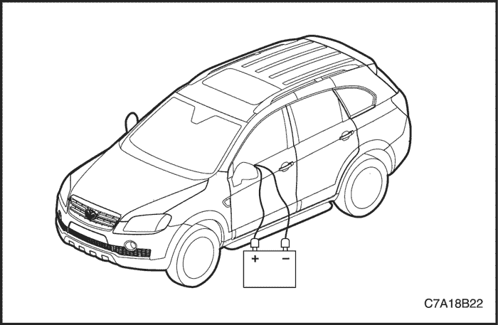
Despliegue del módulo de airbarg (dentro del vehículo)
Despliegue los airbags antes de desecharlos. Si el vehículo va a ser desguazado, los airbags pueden desplegarse en el interior.
Precaución: Para evitar lesiones personales durante el despliegue de un airbag o de un pretensor en el vehículo, tenga en cuenta lo siguiente:
- Antes de desplegar los airbags, retire los objetos sueltos del área de expansión.
- Despliegue los airbags con las puertas cerradas y las ventanillas abiertas.
- Despliegue los airbags sólo en una zona en que se haya hecho salir al personal. El personal de servicio que deba estar presente en el procedimiento de despliegue tiene que estar al menos a 10 metros (33 pies) de distancia delante del vehículo.
- No conecte la fuente de tensión hasta después de haber completado todos los otros preparativos para el despliegue de los airbags.
- Deje que el módulo del airbag o el pretensor se enfríen durante 30 minutos antes de manipularlos.
- Utilice guantes y gafas protectoras durante el procedimiento de despliegue.
- Si el despliegue falla, desconecte la fuente de tensión y espere cinco minutos antes de acercarse al vehículo.
Procedimiento de despliegue
Precaución: El módulo de detección y diagnóstico (SDM) puede mantener suficiente tensión para desplegar los airbags y pretensores durante 1 minuto después de que se haya girado la llave de contacto a la posición OFF y se haya retirado el fusible. Si los airbags y los pretensores no están desconectados, no comience las labores de mantenimiento hasta que haya transcurrido un minuto desde la desconexión de la alimentación de corriente al SDM. Si se desconectan los airbags, se pueden iniciar las labores de mantenimiento inmediatamente sin necesidad de esperar un minuto. Si no se desactiva temporalmente el SIR durante el mantenimiento, se pueden desplegar inesperadamente los airbags, producirse lesiones personales e incluso realizarse reparaciones innecesarias en el SIR.
- Desconecte los cables de la batería y colóquela a unos 10 metros de distancia (33 pies) del vehículo.
- Desmonte de la columna de la dirección el apoyo de la rodilla del lado del conductor o la tapa inferior del panel de instrumentos. Consulte la Sección 9G, Guarnecido interior.
- En la parte inferior de la columna de la dirección, corte los dos cables que van desde el cableado del sistema de sujeciones suplementarias inflables (SIR) hasta el muelle en espiral.
- Pele 13 mm (0,5 pulgadas) del aislamiento en el extremo de los cables que van al muelle en espiral.
- Utilice dos cables adicionales de 10 metros (33 pies) de longitud para llegar desde la batería de despliegue al módulo del inflador.
- Pele 13 mm (0,5 pulgadas) del aislamiento en los extremos de estos dos cables adicionales.
- Trence los dos cables en un extremo.
- Trence los dos cables en un extremo.
- Coloque los cables trenzados cerca de la batería de despliegue. No conecte los cables a la batería en este momento.
- Utilizando los extremos libres de los cables de 10 metros (33 pies) que van al muelle en espiral, haga dos empalmes en cada cable del módulo del airbag.
- Cubra los empalmes con cinta aislante.
- Ahora que los extremos libres de los cables de 10 metros (33 pies) están empalmados a los cables del módulo del airbag, y los extremos que están trenzados están cerca de la batería de despliegue, despeje la zona.
- Destrence los cables que están cerca de la batería de despliegue.
- Conecte un cable al terminal positivo y el otro al terminal negativo de la batería. El airbag se desplegará.
- Repita este procedimiento para el airbag del pasajero, los airbags laterales y pretensores, así como el airbag del rail del techo.
- Teniendo en cuenta las precauciones correspondientes, deseche los pretensores/airbags desplegados. Consulte el apartado "Procedimiento para desechar el módulo del airbag desplegado" de esta sección.
Despliegue del módulo de airbag (fuera del vehículo)
Si el vehículo está dentro del periodo de garantía, póngase en contacto con el director del servicio regional de Daewoo para la aprobación o las instrucciones especiales antes de desplegar los módulos del airbag.
Despliegue los módulos del airbag en las siguientes situaciones:
Precaución: Para evitar lesiones personales durante el despliegue de un airbag o de un pretensor fuera del vehículo, tenga en cuenta lo siguiente:
- Despliegue los airbags sólo en una zona en que se haya hecho salir al personal. El personal de servicio que deba estar presente en el procedimiento de despliegue tiene que estar al menos a 10 metros (33 pies) de distancia delante del vehículo.
- No conecte la fuente de tensión hasta después de haber completado todos los otros preparativos para el despliegue de los airbags.
- Deje que el módulo del airbag o el pretensor se enfríen durante 30 minutos antes de manipularlos.
- Utilice guantes y gafas protectoras durante el procedimiento de despliegue.
- Si el despliegue falla, desconecte la fuente de tensión y espere cinco minutos antes de acercarse al vehículo.
- Coloque el módulo airbag hacia arriba, sobre una superficie plana, al menos, a 10 metros (33 pies) de distancia de objetos y personas.
- Utilice dos cables adicionales de 10 metros (33 pies) de longitud para llegar desde la batería de despliegue al módulo del airbag/pretensor.
- Pele 13 mm (0,5 pulgadas) del aislamiento en los extremos de los dos cables adicionales.
- Trence los dos cables en un extremo.
- Coloque los cables trenzados cerca de la batería de despliegue. No conecte los cables a la batería en este momento.
- Utilizando los extremos libres de los cables de 10 metros (33 pies) que van al módulo del airbag/pretensor, haga dos empalmes, uno en cada cable del módulo del airbag/pretensor.
- Cubra los empalmes con cinta aislante.
- Ahora que los extremos libres de los cables de 10 metros (33 pies) están empalmados a los cables del módulo del airbag/pretensor y los extremos que están trenzados están cerca de la batería de despliegue, despeje la zona.
- Destrence los cables que están cerca de la batería de despliegue.
- Conecte un cable al terminal positivo y el otro al terminal negativo de la batería. El airbag se desplegará.
- Teniendo en cuenta las precauciones correspondientes, deseche los pretensores/airbags desplegados. Consulte el apartado "Procedimiento para desechar el módulo del airbag desplegado" de esta sección.
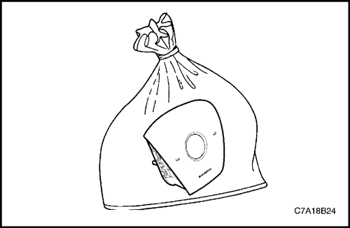
Procedimiento para desechar el módulo del airbag desplegado
Precaución: Después del despliegue, pueden quedar residuos de polvo en la superficie del airbag. El polvo consiste básicamente en almidón de maíz (usado para lubricar la bolsa cuando se infla) y derivados de la reacción química. El hidróxido de sodio reacciona rápidamente con la humedad atmosférica y se convierte en bicarbonato de sodio (también conocido como bicarbonato de sosa). Por consiguiente, no es probable que el hidróxido de sodio esté presente después del despliegue.
Precaución: Utilice guantes y gafas protectoras cuando vaya a desecharlo.
Precaución: Después del despliegue, las superficies de metal de los módulos del airbag estarán calientes. Para evitar el riesgo de lesiones o incendio, no coloque los módulos desplegados cerca de objetos inflamables y deje que los módulos de airbags se enfríen durante 30 minutos antes de manipularlos.
Despliegue un airbag o pretensor antes de desecharlo.
Esto incluye los módulos de un vehículo que vaya a ser desguazado. Si el vehículo está aún dentro del período de garantía, póngase en contacto con el director del servicio regional de Daewoo para la aprobación o las instrucciones especiales antes de desplegar el módulo o el pretensor. Los módulos del airbag o pretensores desplegados deben desecharse de la misma forma que otras partes desechables, siguiendo además los pasos descritos a continuación:
- Coloque el pretensor o el airbag desplegado en una bolsa de plástico.
- Selle la bolsa de plástico de manera segura.
- Lávese las manos y enjuáguelas con agua después de la manipulación de los airbags desplegados.
Reparación del cableado SIR
Reparación de conectores
Los terminales del SIR están hechos de un metal especial para conferir la integridad de contacto necesaria a los circuitos sensibles de baja energía. No repare ningún conector del sistema de sujeciones suplementarias inflables (SIR). Sustituya cualquier conector dañado por otro nuevo.
Reparación del cableado
No repare ningún cable del sistema de sujeciones suplementarias inflables (SIR). Sustituya cualquier cable dañado por otro nuevo.
| © Copyright Chevrolet Europe. Reservados todos los derechos |